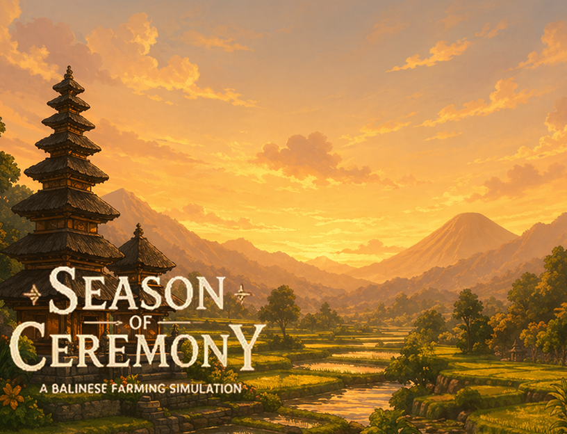

Season of Ceremony
Merupakan Permainan singkat yang menggambarkan situasi dimana karakter utama diberikan waktu 30 hari untuk mempersiapkan hari galungan.
Lihat Detail...I Gusti Bagus
Software Dev & Multimedia Enthusiast
Perkenalkan, saya Wira, seorang individu yang berfokus pada pengembangan perangkat lunak dan bidang multimedia, dengan pengalaman menggunakan Python, Java, JavaScript, HTML, CSS, dan SQL serta berbagai aplikasi desain dan editing seperti Adobe Photoshop dan Adobe Premiere. Terbiasa mengembangkan website, aplikasi sederhana, dan game menggunakan Unity.
Ringkasan Karya
Beberapa project yang saya kerjakan, untuk selengkapnya bisa dibuka pada menu Project di navigasi

Merupakan Permainan singkat yang menggambarkan situasi dimana karakter utama diberikan waktu 30 hari untuk mempersiapkan hari galungan.
Lihat Detail...
Aplikasi perpustakaan digital berbasis web. Pengguna dapat mencari, mengunduh, dan menyimpan buku ke wishlist. Pustakawan dapat mengelola koleksi buku dan pengguna.
Lihat Detail...
Prototype yang dibuat menggunakan figma, sebuah sistem yang direncanakan akan memuat detail dari budaya tradisional Bali.
Lihat Detail...Hubungi Saya
Saya siap sedia dan responsif untuk membantu kebutuhan Anda kapan saja. Jangan ragu untuk terhubung dengan saya melalui informasi kontak yang tertera pada [tautan/halaman ini].